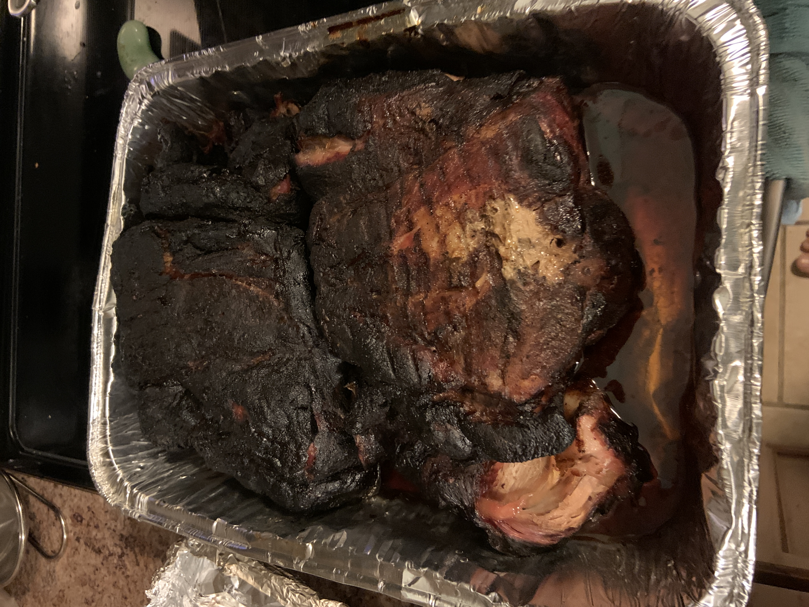

Pork Butt

A delicious slow cooked pork dinner, best served with family and friends
This meal takes a little time to prepare,
but a lot of time to cook. Required: patience and a smoker
Ingredients
- Pork butt or shoulder (bone in for best results)
- Salt
- Pepper
- Garlic
- or skip all of the above and use Hot BBQ rub
Additional items needed
- Aluminum pan with foil
- wood chunks (Any fruit wood works)
Steps
- Prepare smoker for indirect heat: 275F(135C).
- trim excess fat from Pork butt, down to 1/4"(.63cm)
- season all sides with salt, pepper, and garlic,
or skip all of these and use your favorite Hot BBQ rub.
- Place Pork Butt on smoker, add wood chunks
- smoke for 4-5 hours maintaining consistent heat and smoke
- check internal temperature, and continue to smoke until reaches 160F(71C)
- Once reaches temperature, place Pork Butt in pan, seal with foil, & return to smoker
- continue cooking until internal temperature reaches 200F(93.3C)
- remove Pork Butt and let rest for at least 1 hour hour
- Mainly let the juices reconstitute
- once ready, shred with tool or gloved hands.
- enjoy!